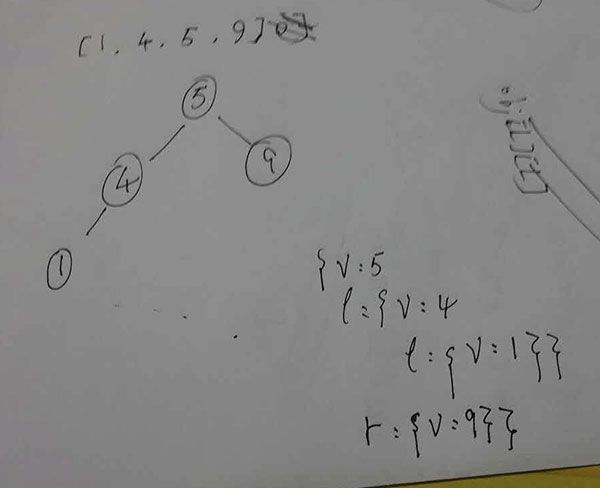
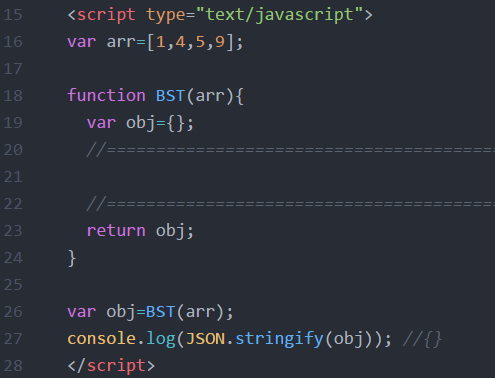
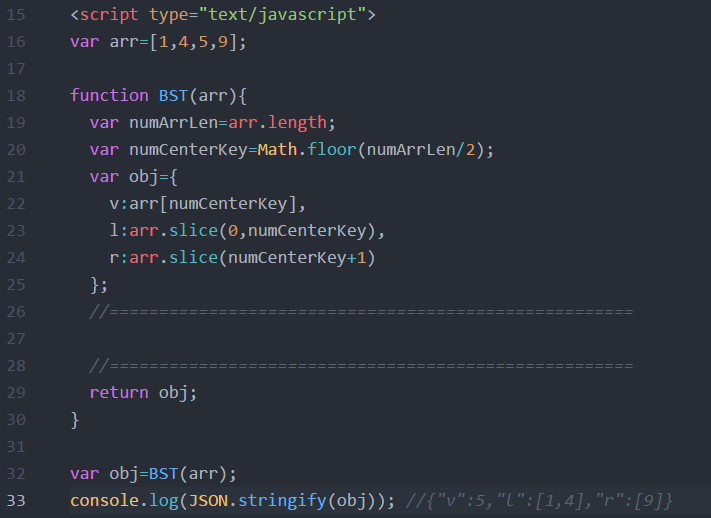
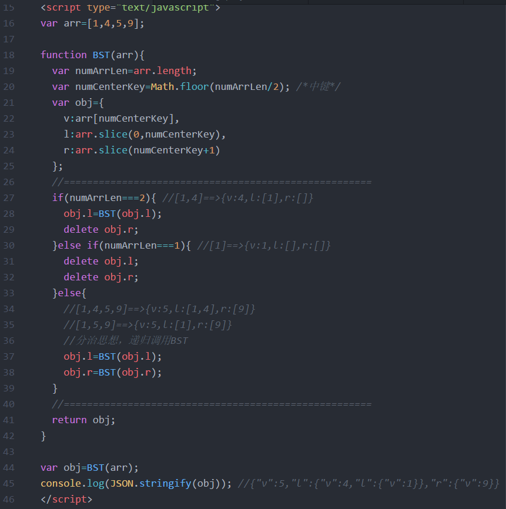
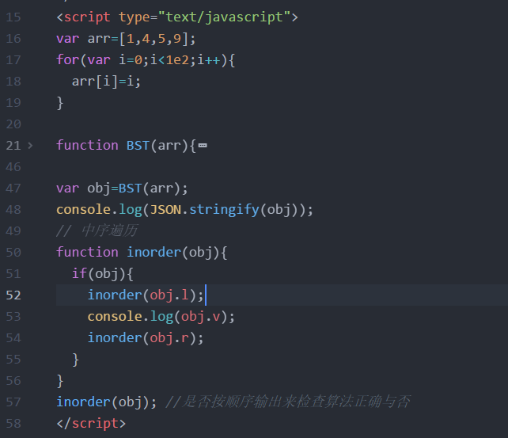
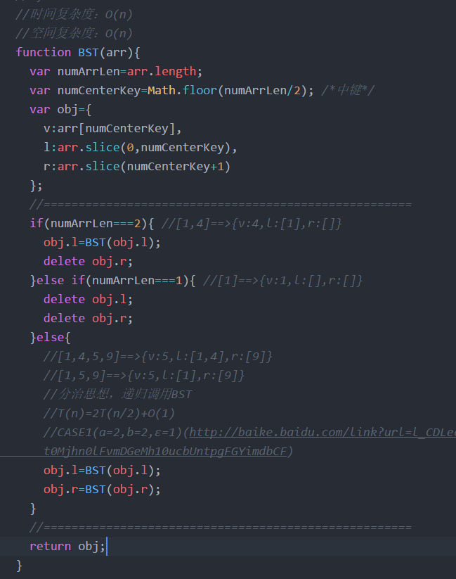
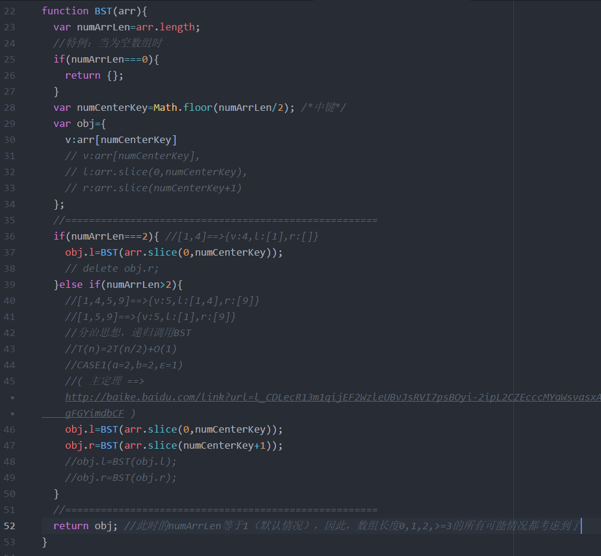

给予一个已经排序好的整数数组，生成一个相对合理的二叉搜索树。
算法和数学有很大的关系，数学好的人，学起算法来更容易上手，好在我小時候上数学课堂时很少打瞌睡。
看到这题目，又让我重温了一下基本数据结构之二叉搜索树，关键字眼是“相对合理的二叉搜索树”，具体代码急不来，先要有思路。
容易理解生成的二叉搜索树必须是完全二叉搜索树才相对合理。因为只有这样它的深度才最浅。
通常解这些算法题我都先举小例子，由简入深。下面是草稿图。

首先明确算法的输入(arr)及输出(obj)。以下是完整演变过程。

↑ 1.搭好基础骨架，此时输出 {}

↑ 2.先尝试输出obj的三个基本属性，此时输出 {v:5,l:[1,4],r:[9]}

↑ 3.上一步中可以看到l与r并不是对象，而是原数组的子数组。所以很自然的想到分治策略，递归主函数。然后就是找递归出口，先自己在草稿上画一下数组长度由4慢慢下降时的输出结果，你会发现：长度为4、3的输出都妥妥的，当数组长度为2时，r部分变为空数组，这时我们应该停止递归赋值给r部分（同时删除初始化时已经赋予的值[]），当数组长度为1时，l、r都变为空数组，这时，我们应该停止递归赋值。此时输出 {v:5,l:{v:4,l:{v:1}},r:{v:9}}

↑ 4.到这里，结果出来了。是我们想要的输出。但是，我们还应该拿更多的输入做测试。我初始化了一个1到100的数组，然后中序输出结果。在firebug下查看，是正确的。

↑ 5.算法复杂度分析：T(n)=O(n),S(n)=O(n).

↑ 6.整理代码，优化细节，添加合理注释。完整代码在这里。
最后，应该还要对算法输入做检测。检测给定的数据是否是数组？是否有序？每个元素是否都为整数？是否互异？